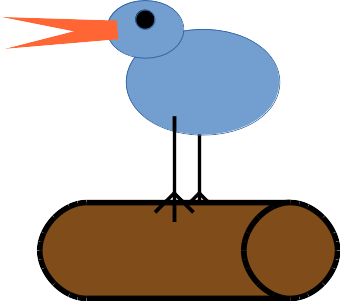

<ul class="nav nav-sidebar">
  <li><a href="{{url('timeline')}}">Timeline</span></a></li>
  <li><a href="{{url('userTweets', [$session.user])}}">My Tweets</a></li>
  <li><a href="{{url('followers')}}">Followers</a></li>
  <li><a href="{{url('followees')}}">Followees</a></li>
  <li><a href="{{url('learnMore')}}">About</a></li>
</ul>
